2022 National 5 Chemistry - Paper 2 questions
Source: Scottish Qualifications Authority (SQA) / Qualifications Scotland. This is a StemInteract HTML companion, not an official HTML edition. Selectable text is supplied alongside original page images. Use the images or original PDF for equations, powers, fractions, vector notation, tables and diagrams; text extraction cannot fully preserve mathematical layout.
Jump to a question
PDF page 1
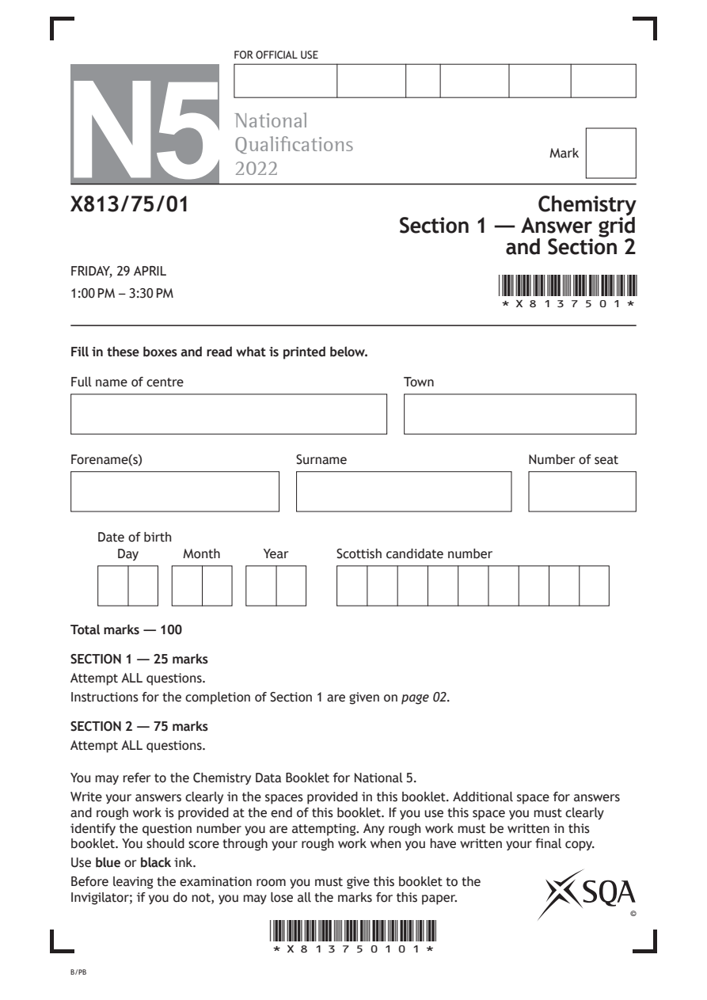
Selectable page text
FOR OFFICIAL USE
N5
National
Qualications
Mark
2022
X813/75/01 Chemistry
Section 1 — Answer grid
and Section 2
FRIDAY, 29 APRIL
1:00 PM – 3:30 PM
*X8137501*
Fill in these boxes and read what is printed below.
Full name of centre Town
Forename(s) Surname Number of seat
Date of birth
Day Month Year Scottish candidate number
Total marks — 100
SECTION 1 — 25 marks
Attempt ALL questions.
Instructions for the completion of Section 1 are given on page 02.
SECTION 2 — 75 marks
Attempt ALL questions.
You may refer to the Chemistry Data Booklet for National 5.
Write your answers clearly in the spaces provided in this booklet. Additional space for answers
and rough work is provided at the end of this booklet. If you use this space you must clearly
identify the question number you are attempting. Any rough work must be written in this
booklet. You should score through your rough work when you have written your final copy.
Use blue or black ink.
Before leaving the examination room you must give this booklet to the
Invigilator; if you do not, you may lose all the marks for this paper.
©
*X813750101*
B/PBPDF page 2
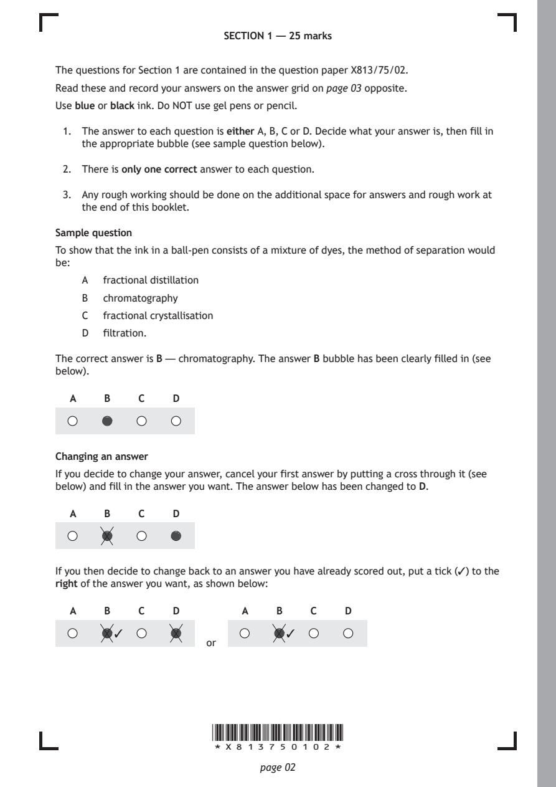
Selectable page text
SECTION 1 — 25 marks
The questions for Section 1 are contained in the question paper X813/75/02.
Read these and record your answers on the answer grid on page 03 opposite.
Use blue or black ink. Do NOT use gel pens or pencil.
1. The answer to each question is either A, B, C or D. Decide what your answer is, then fill in
the appropriate bubble (see sample question below).
2. There is only one correct answer to each question.
3. Any rough working should be done on the additional space for answers and rough work at
the end of this booklet.
Sample question
To show that the ink in a ball-pen consists of a mixture of dyes, the method of separation would
be:
A fractional distillation
B chromatography
C fractional crystallisation
D filtration.
The correct answer is B — chromatography. The answer B bubble has been clearly filled in (see
below).
A B C D
Changing an answer
If you decide to change your answer, cancel your first answer by putting a cross through it (see
below) and fill in the answer you want. The answer below has been changed to D.
A B C D
If you then decide to change back to an answer you have already scored out, put a tick (3) to the
right of the answer you want, as shown below:
A B C D A B C D
or
*X813750102*
page 02PDF page 3

Selectable page text
SECTION 1 — Answer grid
*OBJ25AD1*
A B C D
1
2
3
4
5
6
7
8
9
10
11
12
13
14
15
16
17
18
19
20
21
22
23
24
25
*X813750103*
page 03 [Turn overPDF page 4

Selectable page text
[BLANK PAGE]
DO NOT WRITE ON THIS PAGE
*X813750104*
page 04PDF page 5
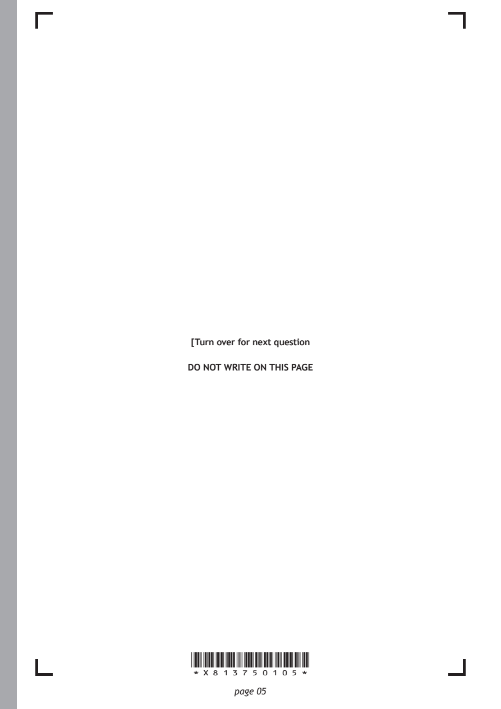
Selectable page text
[Turn over for next question
DO NOT WRITE ON THIS PAGE
*X813750105*
page 05PDF page 6
Paper 2, Question 1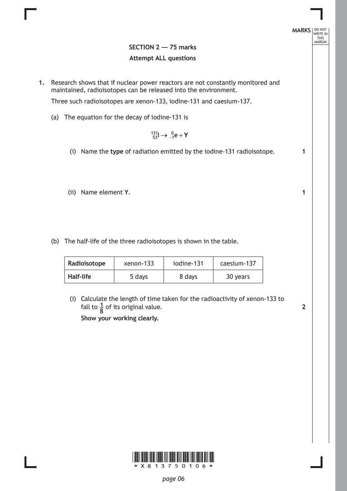
Selectable page text
MARKS _{W}^{D}_{R}^{O}_{I} _{T}^{N}OT
E IN
THIS
MARGIN
SECTION 2 — 75 marks
Attempt ALL questions
1. Research shows that if nuclear power reactors are not constantly monitored and
maintained, radioisotopes can be released into the environment.
Three such radioisotopes are xenon-133, iodine-131 and caesium-137.
(a) The equation for the decay of iodine-131 is
131I 0e+Y
53 −1
(i) Name the type of radiation emitted by the iodine-131 radioisotope. 1
(ii) Name element Y. 1
(b) The half-life of the three radioisotopes is shown in the table.
Radioisotope xenon-133 iodine-131 caesium-137
Half-life 5 days 8 days 30 years
(i) Calculate the length of time taken for the radioactivity of xenon-133 to
1
fall to of its original value. 2
8
Show your working clearly.
*X813750106*
page 06PDF page 7
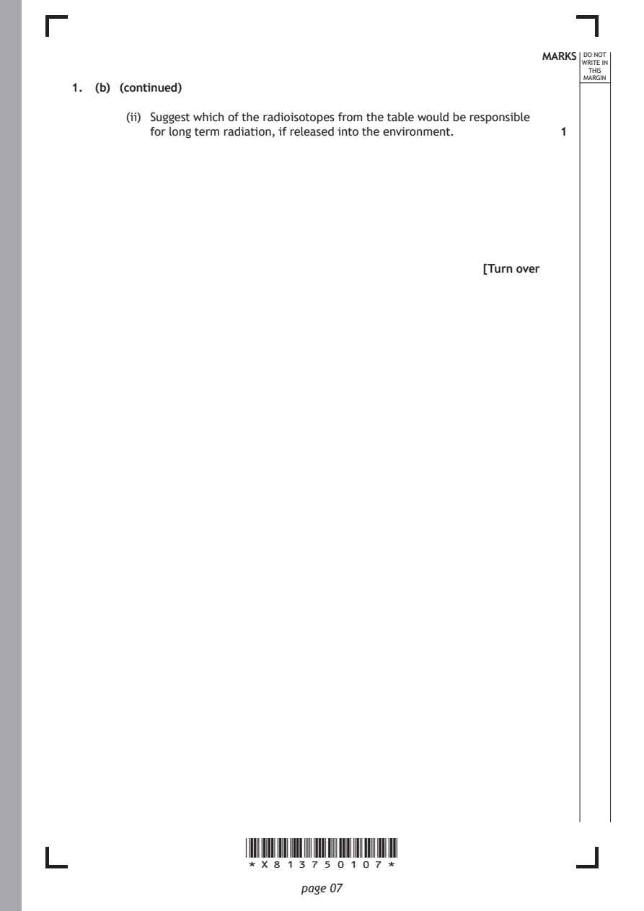
Selectable page text
MARKS _{W}^{D}_{R}^{O}_{I} _{T}^{N}OT
E IN
THIS
MARGIN
1. (b) (continued)
(ii) Suggest which of the radioisotopes from the table would be responsible
for long term radiation, if released into the environment. 1
[Turn over
*X813750107*
page 07PDF page 8
Paper 2, Question 2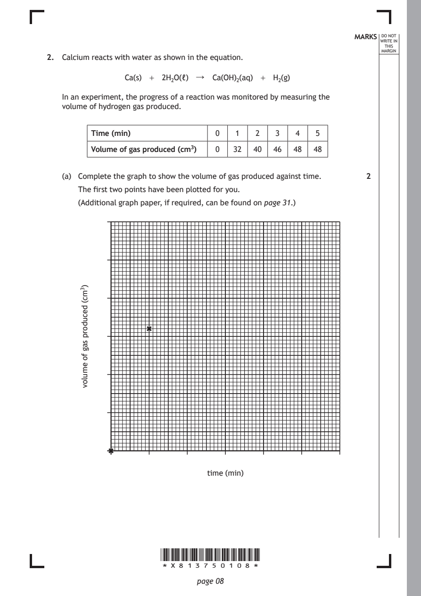
Selectable page text
MARKS _{W}^{D}_{R}^{O}_{I} _{T}^{N}OT
E IN
THIS
MARGIN
2. Calcium reacts with water as shown in the equation.
Ca(s) + 2H₂O(ℓ) ↓ Ca(OH)₂(aq) + H₂(g)
In an experiment, the progress of a reaction was monitored by measuring the
volume of hydrogen gas produced.
Time (min) 0 1 2 3 4 5
Volume of gas produced (cm³) 0 32 40 46 48 48
(a) Complete the graph to show the volume of gas produced against time.
The first two points have been plotted for you.
(Additional graph paper, if required, can be found on page 31.)
*X813750108*
page 08
)3mc(
decudorp
sag
fo
emulov
2
time (min)PDF page 9
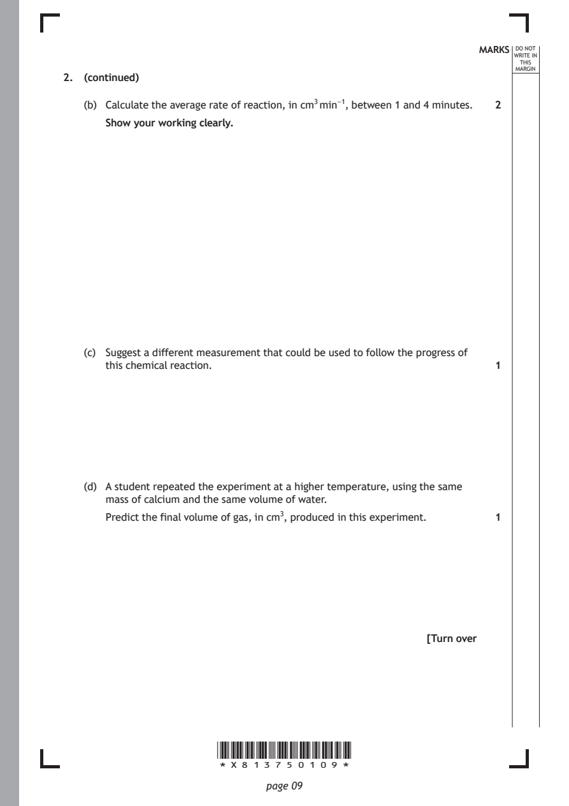
Selectable page text
MARKS _{W}^{D}_{R}^{O}_{I} _{T}^{N}OT
E IN
THIS
MARGIN
2. (continued)
(b) Calculate the average rate of reaction, in cm³ min⁻¹, between 1 and 4 minutes. 2
Show your working clearly.
(c) Suggest a different measurement that could be used to follow the progress of
this chemical reaction. 1
(d) A student repeated the experiment at a higher temperature, using the same
mass of calcium and the same volume of water.
Predict the final volume of gas, in cm³, produced in this experiment. 1
[Turn over
*X813750109*
page 09PDF page 10
Paper 2, Question 3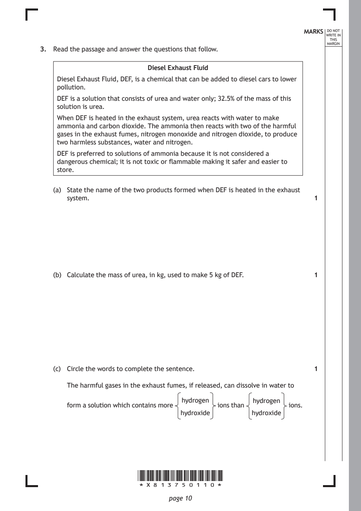
Selectable page text
MARKS _{W}^{D}_{R}^{O}_{I} _{T}^{N}OT
E IN
THIS
MARGIN
3. Read the passage and answer the questions that follow.
Diesel Exhaust Fluid
Diesel Exhaust Fluid, DEF, is a chemical that can be added to diesel cars to lower
pollution.
DEF is a solution that consists of urea and water only; 32.5% of the mass of this
solution is urea.
When DEF is heated in the exhaust system, urea reacts with water to make
ammonia and carbon dioxide. The ammonia then reacts with two of the harmful
gases in the exhaust fumes, nitrogen monoxide and nitrogen dioxide, to produce
two harmless substances, water and nitrogen.
DEF is preferred to solutions of ammonia because it is not considered a
dangerous chemical; it is not toxic or flammable making it safer and easier to
store.
(a) State the name of the two products formed when DEF is heated in the exhaust
system. 1
(b) Calculate the mass of urea, in kg, used to make 5 kg of DEF. 1
(c) Circle the words to complete the sentence. 1
The harmful gases in the exhaust fumes, if released, can dissolve in water to
hydrogen hydrogen
form a solution which contains more ions than ions.
hydroxide hydroxide
*X813750110*
page 10PDF page 11
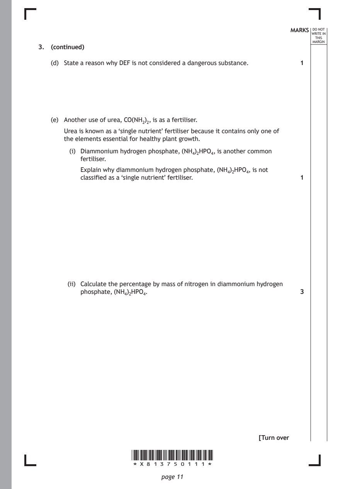
Selectable page text
MARKS _{W}^{D}_{R}^{O}_{I} _{T}^{N}OT
E IN
THIS
MARGIN
3. (continued)
(d) State a reason why DEF is not considered a dangerous substance. 1
(e) Another use of urea, CO(NH₂)₂, is as a fertiliser.
Urea is known as a ‘single nutrient’ fertiliser because it contains only one of
the elements essential for healthy plant growth.
(i) Diammonium hydrogen phosphate, (NH₄)₂HPO₄, is another common
fertiliser.
Explain why diammonium hydrogen phosphate, (NH₄)₂HPO₄, is not
classified as a ‘single nutrient’ fertiliser. 1
(ii) Calculate the percentage by mass of nitrogen in diammonium hydrogen
phosphate, (NH₄)₂HPO₄. 3
[Turn over
*X813750111*
page 11PDF page 12
Paper 2, Question 4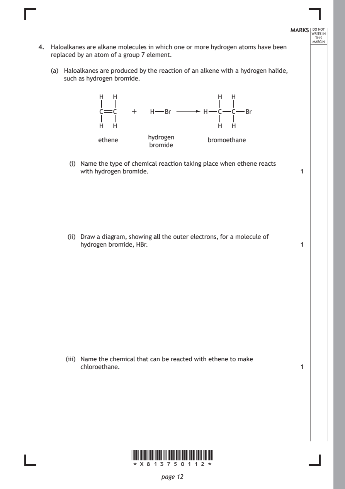
Selectable page text
MARKS _{W}^{D}_{R}^{O}_{I} _{T}^{N}OT
E IN
THIS
MARGIN
4. Haloalkanes are alkane molecules in which one or more hydrogen atoms have been
replaced by an atom of a group 7 element.
(a) Haloalkanes are produced by the reaction of an alkene with a hydrogen halide,
such as hydrogen bromide.
H H H H
C C H Br H C C Br
H H H H
hydrogen
ethene bromoethane
bromide
(i) Name the type of chemical reaction taking place when ethene reacts
with hydrogen bromide. 1
(ii) Draw a diagram, showing all the outer electrons, for a molecule of
hydrogen bromide, HBr. 1
(iii) Name the chemical that can be reacted with ethene to make
chloroethane. 1
*X813750112*
page 12PDF page 13
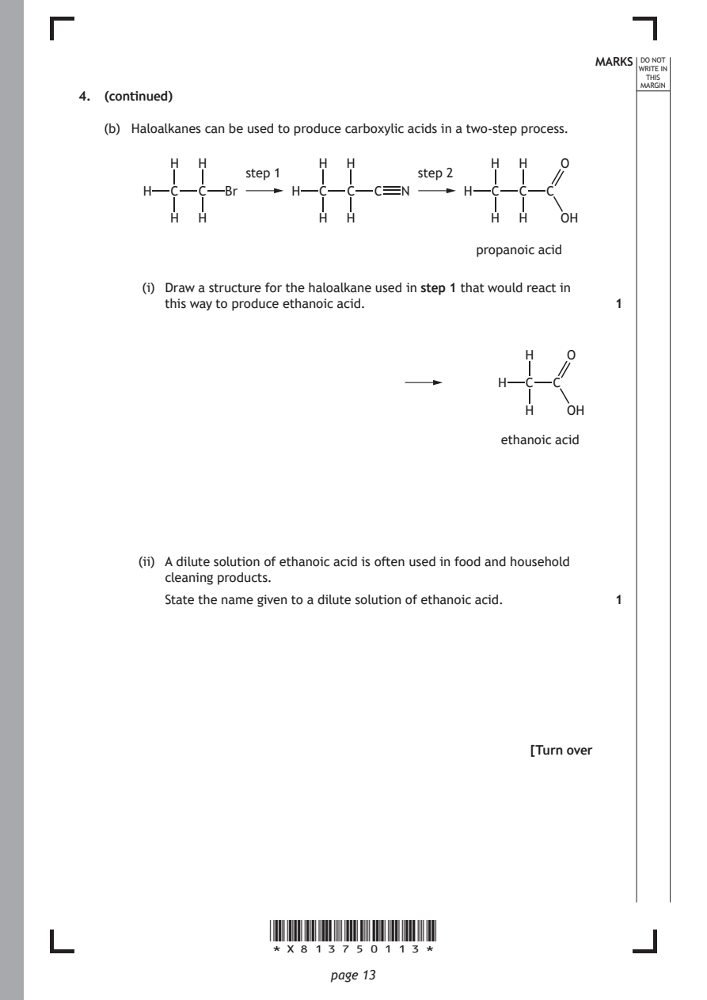
Selectable page text
MARKS _{W}^{D}_{R}^{O}_{I} _{T}^{N}OT
E IN
THIS
MARGIN
4. (continued)
(b) Haloalkanes can be used to produce carboxylic acids in a two-step process.
H H H H H H O
step 1 step 2
H C C Br H C C C N H C C C
H H H H H H OH
propanoic acid
(i) Draw a structure for the haloalkane used in step 1 that would react in
this way to produce ethanoic acid. 1
H O
H C C
H OH
ethanoic acid
(ii) A dilute solution of ethanoic acid is often used in food and household
cleaning products.
State the name given to a dilute solution of ethanoic acid. 1
[Turn over
*X813750113*
page 13PDF page 14
Paper 2, Question 5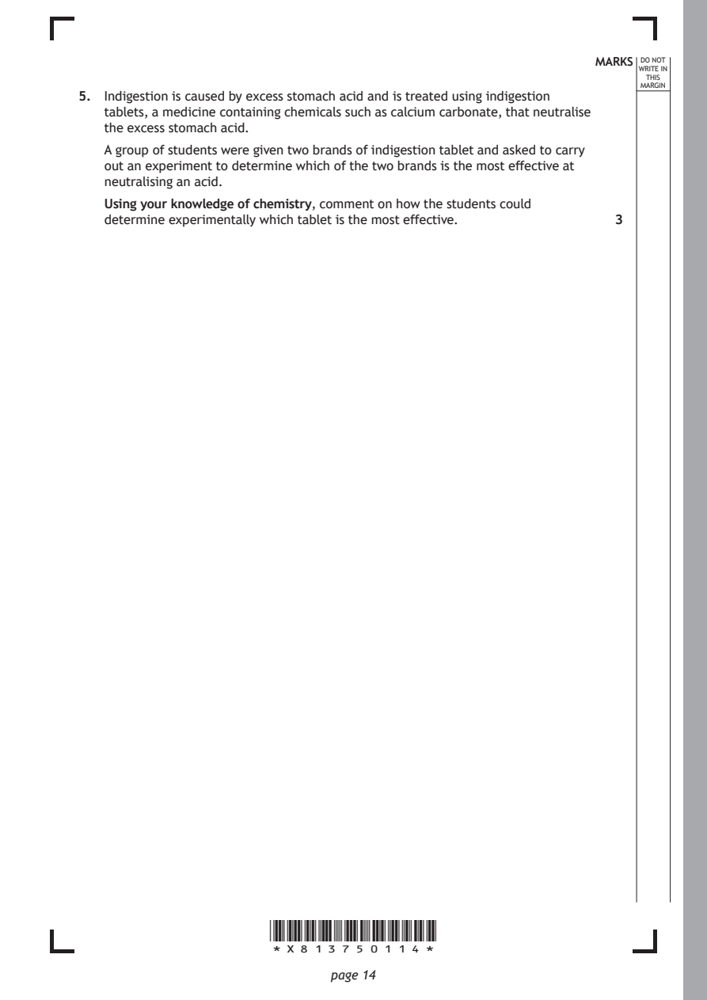
Selectable page text
MARKS _{W}^{D}_{R}^{O}_{I} _{T}^{N}OT
E IN
THIS
MARGIN
5. Indigestion is caused by excess stomach acid and is treated using indigestion
tablets, a medicine containing chemicals such as calcium carbonate, that neutralise
the excess stomach acid.
A group of students were given two brands of indigestion tablet and asked to carry
out an experiment to determine which of the two brands is the most effective at
neutralising an acid.
Using your knowledge of chemistry, comment on how the students could
determine experimentally which tablet is the most effective. 3
*X813750114*
page 14PDF page 15
Paper 2, Question 6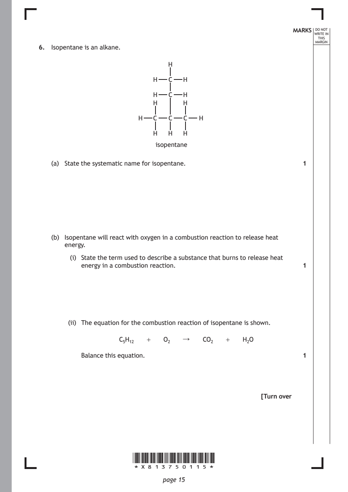
Selectable page text
MARKS _{W}^{D}_{R}^{O}_{I} _{T}^{N}OT
E IN
THIS
MARGIN
6. Isopentane is an alkane.
H
H C H
H C H
H H
H C C C H
H H H
isopentane
(a) State the systematic name for isopentane. 1
(b) Isopentane will react with oxygen in a combustion reaction to release heat
energy.
(i) State the term used to describe a substance that burns to release heat
energy in a combustion reaction. 1
(ii) The equation for the combustion reaction of isopentane is shown.
C₅H₁₂ + O₂ ↓ CO₂ + H₂O
Balance this equation. 1
[Turn over
*X813750115*
page 15PDF page 16
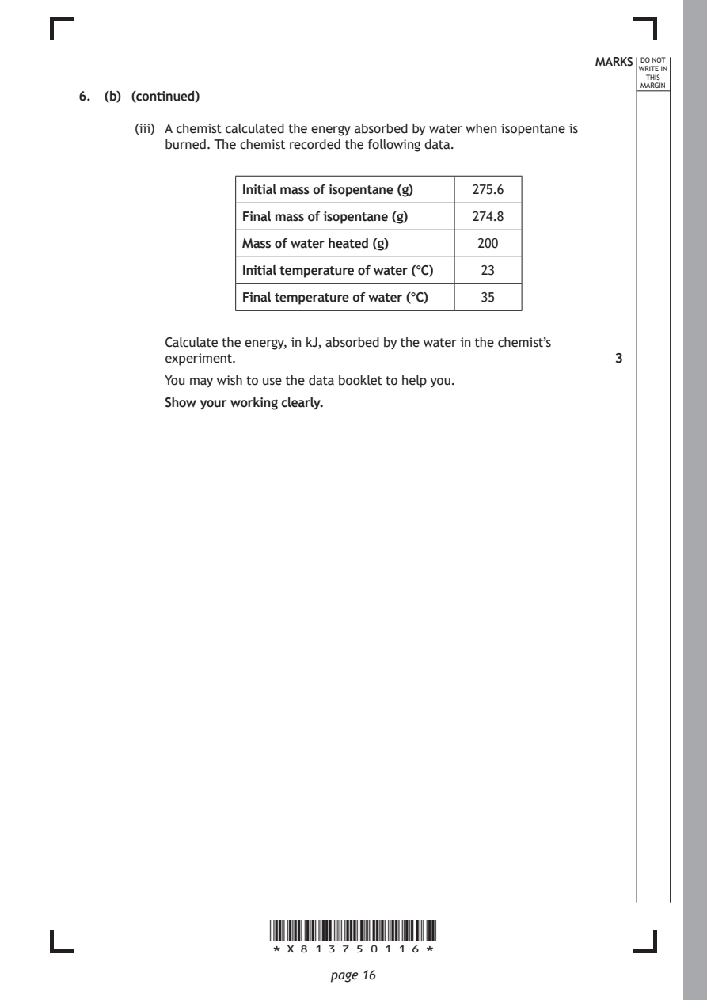
Selectable page text
MARKS _{W}^{D}_{R}^{O}_{I} _{T}^{N}OT
E IN
THIS
MARGIN
6. (b) (continued)
(iii) A chemist calculated the energy absorbed by water when isopentane is
burned. The chemist recorded the following data.
Initial mass of isopentane (g) 275.6
Final mass of isopentane (g) 274.8
Mass of water heated (g) 200
Initial temperature of water (°C) 23
Final temperature of water (°C) 35
Calculate the energy, in kJ, absorbed by the water in the chemist’s
experiment. 3
You may wish to use the data booklet to help you.
Show your working clearly.
*X813750116*
page 16PDF page 17
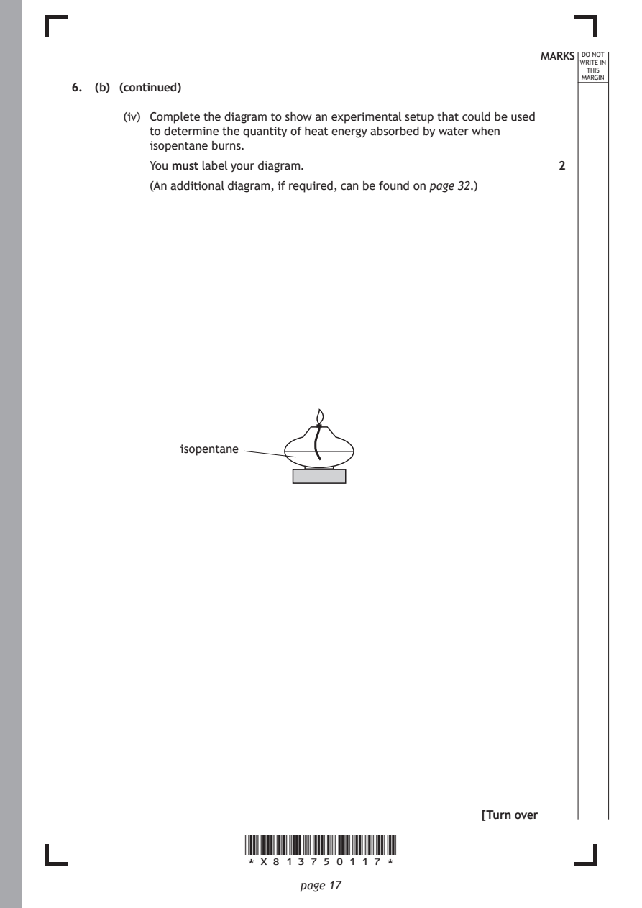
Selectable page text
MARKS _{W}^{D}_{R}^{O}_{I} _{T}^{N}OT
E IN
THIS
MARGIN
6. (b) (continued)
(iv) Complete the diagram to show an experimental setup that could be used
to determine the quantity of heat energy absorbed by water when
isopentane burns.
You must label your diagram. 2
(An additional diagram, if required, can be found on page 32.)
isopentane
[Turn over
*X813750117*
page 17PDF page 18
Paper 2, Question 7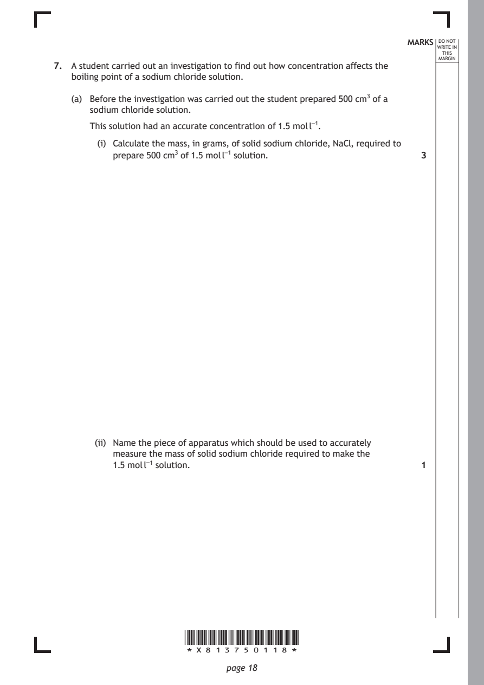
Selectable page text
MARKS _{W}^{D}_{R}^{O}_{I} _{T}^{N}OT
E IN
THIS
MARGIN
7. A student carried out an investigation to find out how concentration affects the
boiling point of a sodium chloride solution.
(a) Before the investigation was carried out the student prepared 500 cm³ of a
sodium chloride solution.
This solution had an accurate concentration of 1.5 mol l⁻¹.
(i) Calculate the mass, in grams, of solid sodium chloride, NaCl, required to
prepare 500 cm³ of 1.5 mol l⁻¹ solution. 3
(ii) Name the piece of apparatus which should be used to accurately
measure the mass of solid sodium chloride required to make the
1.5 mol l⁻¹ solution. 1
*X813750118*
page 18PDF page 19
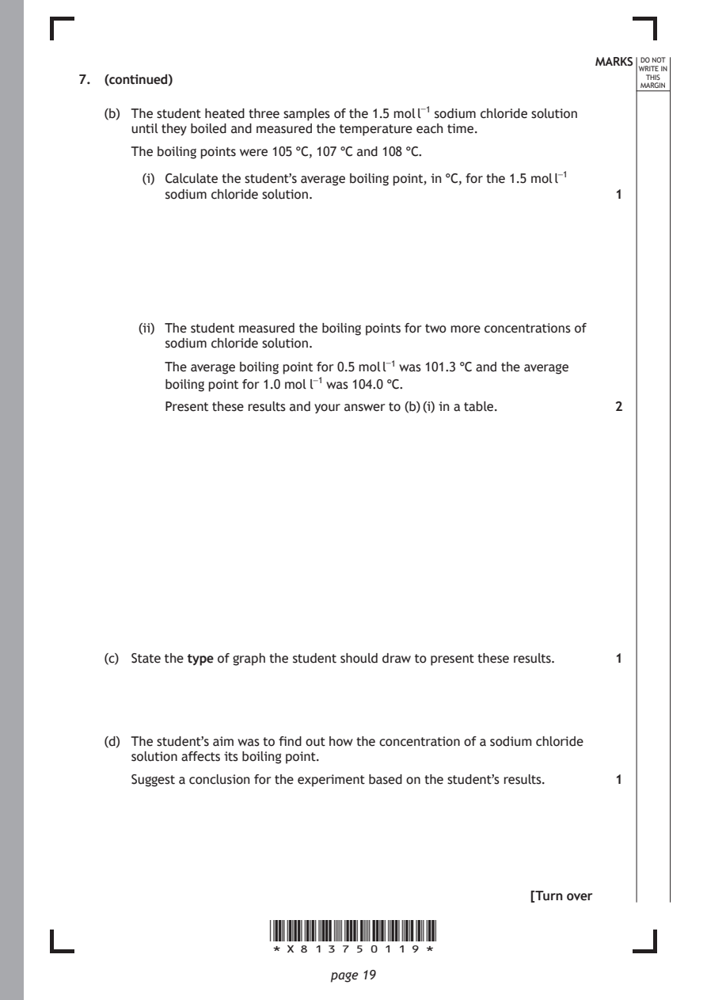
Selectable page text
MARKS _{W}^{D}_{R}^{O}_{I} _{T}^{N}OT
E IN
7. (continued) THIS
MARGIN
(b) The student heated three samples of the 1.5 mol l⁻¹ sodium chloride solution
until they boiled and measured the temperature each time.
The boiling points were 105 °C, 107 °C and 108 °C.
(i) Calculate the student’s average boiling point, in °C, for the 1.5 mol l⁻¹
sodium chloride solution. 1
(ii) The student measured the boiling points for two more concentrations of
sodium chloride solution.
The average boiling point for 0.5 mol l⁻¹ was 101.3 °C and the average
boiling point for 1.0 mol l⁻¹ was 104.0 °C.
Present these results and your answer to (b) (i) in a table. 2
(c) State the type of graph the student should draw to present these results. 1
(d) The student’s aim was to find out how the concentration of a sodium chloride
solution affects its boiling point.
Suggest a conclusion for the experiment based on the student’s results. 1
[Turn over
*X813750119*
page 19PDF page 20
Paper 2, Question 8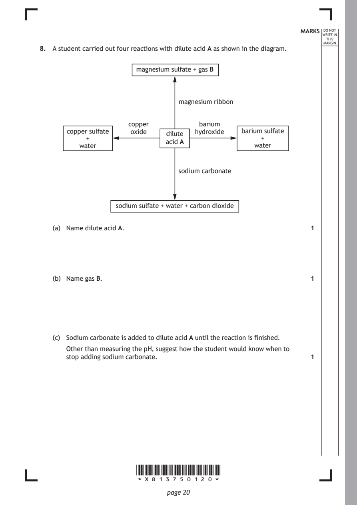
Selectable page text
MARKS _{W}^{D}_{R}^{O}_{I} _{T}^{N}OT
E IN
THIS
MARGIN
8. A student carried out four reactions with dilute acid A as shown in the diagram.
magnesium sulfate + gas B
magnesium ribbon
copper barium
copper sulfate oxide hydroxide barium sulfate
dilute
+ +
acid A
water water
sodium carbonate
sodium sulfate + water + carbon dioxide
(a) Name dilute acid A. 1
(b) Name gas B. 1
(c) Sodium carbonate is added to dilute acid A until the reaction is finished.
Other than measuring the pH, suggest how the student would know when to
stop adding sodium carbonate. 1
*X813750120*
page 20PDF page 21
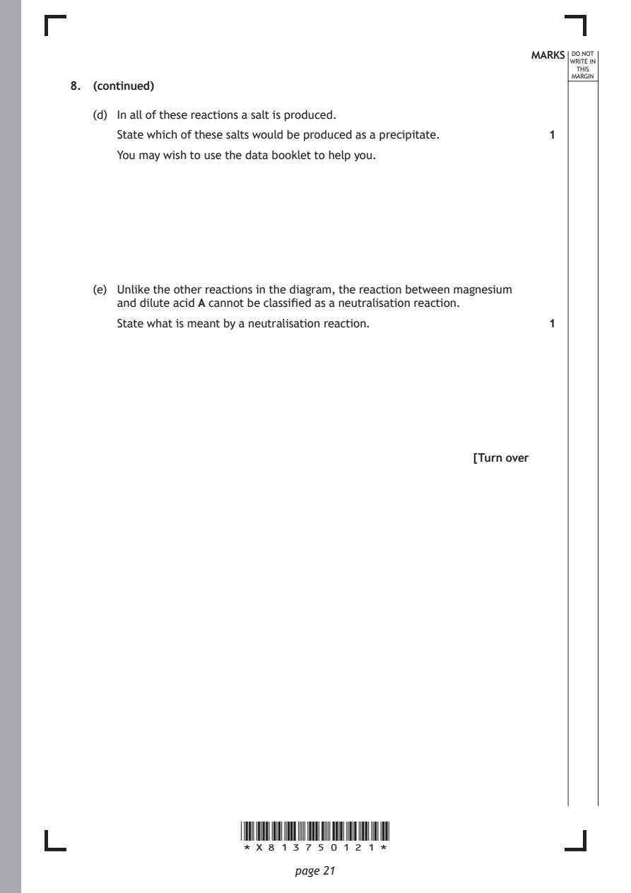
Selectable page text
MARKS _{W}^{D}_{R}^{O}_{I} _{T}^{N}OT
E IN
THIS
MARGIN
8. (continued)
(d) In all of these reactions a salt is produced.
State which of these salts would be produced as a precipitate. 1
You may wish to use the data booklet to help you.
(e) Unlike the other reactions in the diagram, the reaction between magnesium
and dilute acid A cannot be classified as a neutralisation reaction.
State what is meant by a neutralisation reaction. 1
[Turn over
*X813750121*
page 21PDF page 22
Paper 2, Question 9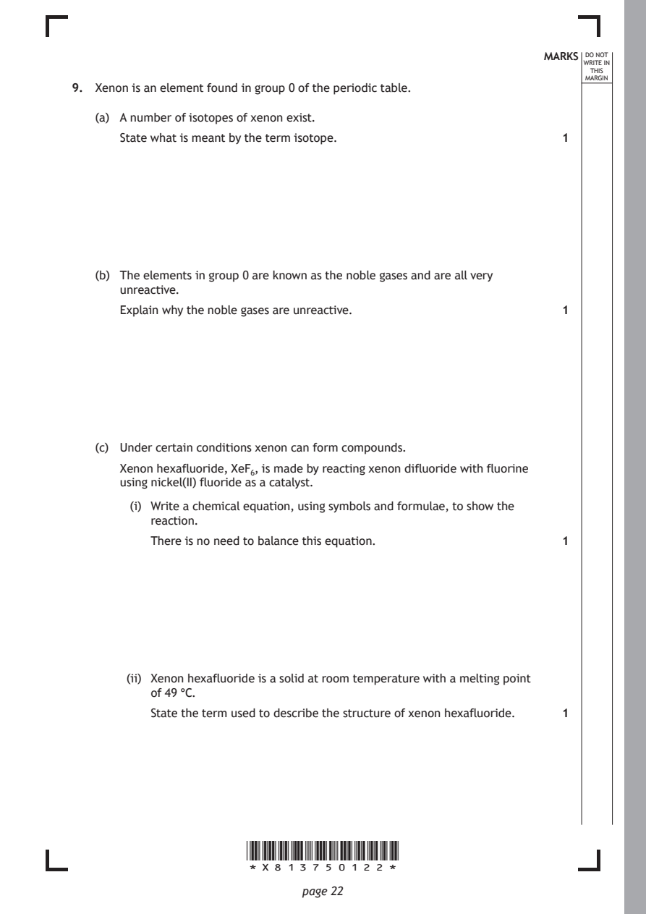
Selectable page text
MARKS _{W}^{D}_{R}^{O}_{I} _{T}^{N}OT
E IN
THIS
MARGIN
9. Xenon is an element found in group 0 of the periodic table.
(a) A number of isotopes of xenon exist.
State what is meant by the term isotope. 1
(b) The elements in group 0 are known as the noble gases and are all very
unreactive.
Explain why the noble gases are unreactive. 1
(c) Under certain conditions xenon can form compounds.
Xenon hexafluoride, XeF₆, is made by reacting xenon difluoride with fluorine
using nickel(II) fluoride as a catalyst.
(i) Write a chemical equation, using symbols and formulae, to show the
reaction.
There is no need to balance this equation. 1
(ii) Xenon hexafluoride is a solid at room temperature with a melting point
of 49 °C.
State the term used to describe the structure of xenon hexafluoride. 1
*X813750122*
page 22PDF page 23
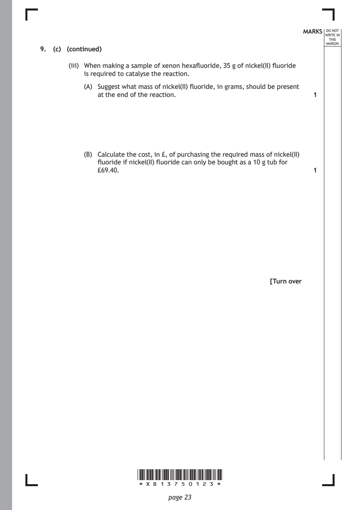
Selectable page text
MARKS _{W}^{D}_{R}^{O}_{I} _{T}^{N}OT
E IN
THIS
MARGIN
9. (c) (continued)
(iii) When making a sample of xenon hexafluoride, 35 g of nickel(II) fluoride
is required to catalyse the reaction.
(A) Suggest what mass of nickel(II) fluoride, in grams, should be present
at the end of the reaction. 1
(B) Calculate the cost, in £, of purchasing the required mass of nickel(II)
fluoride if nickel(II) fluoride can only be bought as a 10 g tub for
£69.40. 1
[Turn over
*X813750123*
page 23PDF page 24
Paper 2, Question 10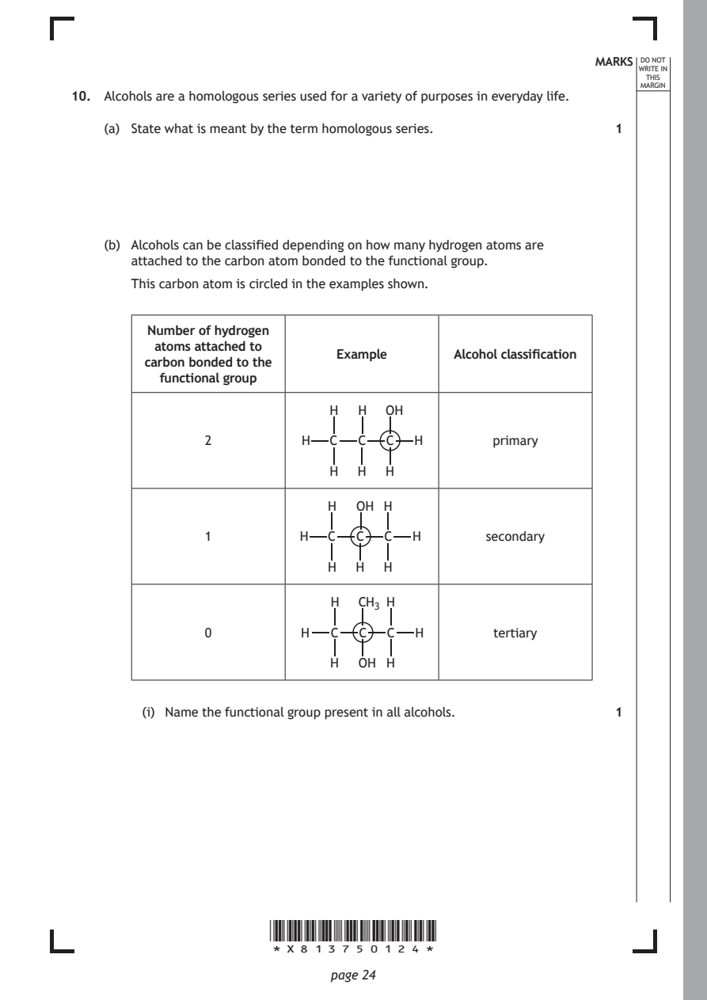
Selectable page text
MARKS _{W}^{D}_{R}^{O}_{I} _{T}^{N}OT
E IN
THIS
MARGIN
10. Alcohols are a homologous series used for a variety of purposes in everyday life.
(a) State what is meant by the term homologous series. 1
(b) Alcohols can be classified depending on how many hydrogen atoms are
attached to the carbon atom bonded to the functional group.
This carbon atom is circled in the examples shown.
Number of hydrogen
atoms attached to
Example Alcohol classification
carbon bonded to the
functional group
H H OH
2 H C C C H primary
H H H
H OH H
1 H C C C H secondary
H H H
H CH₃ H
0 H C C C H tertiary
H OH H
(i) Name the functional group present in all alcohols. 1
*X813750124*
page 24PDF page 25
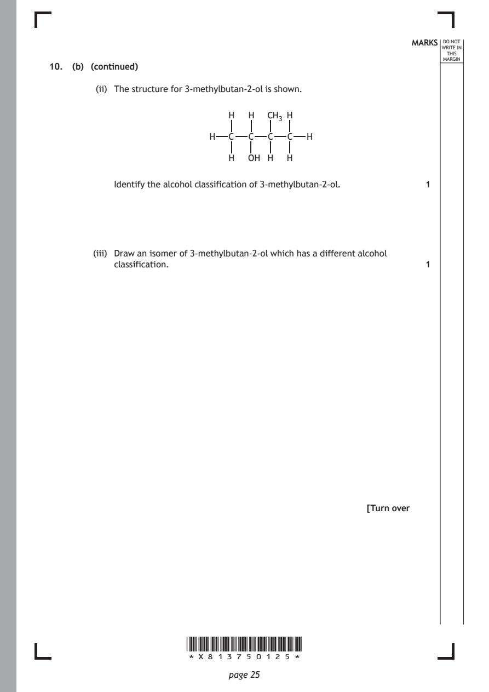
Selectable page text
MARKS _{W}^{D}_{R}^{O}_{I} _{T}^{N}OT
E IN
THIS
MARGIN
10. (b) (continued)
(ii) The structure for 3-methylbutan-2-ol is shown.
H H CH₃ H
H C C C C H
H OH H H
Identify the alcohol classification of 3-methylbutan-2-ol. 1
(iii) Draw an isomer of 3-methylbutan-2-ol which has a different alcohol
classification. 1
[Turn over
*X813750125*
page 25PDF page 26
Paper 2, Question 11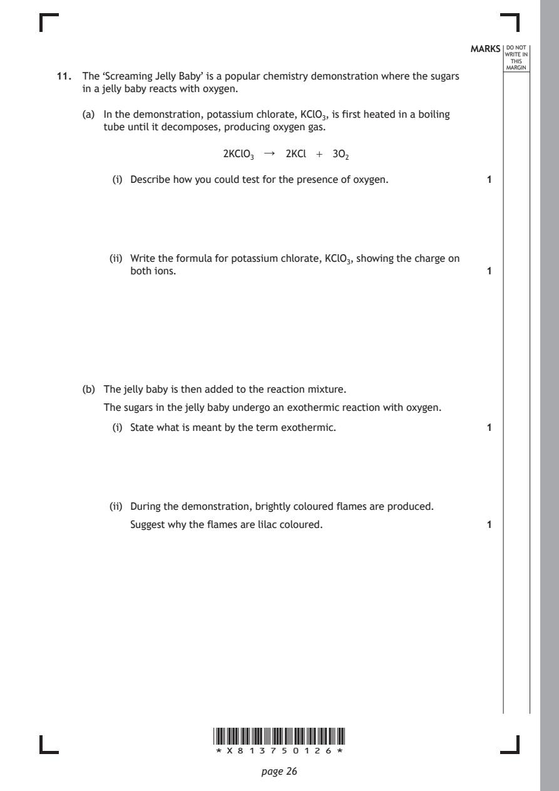
Selectable page text
MARKS _{W}^{D}_{R}^{O}_{I} _{T}^{N}OT
E IN
THIS
MARGIN
11. The ‘Screaming Jelly Baby’ is a popular chemistry demonstration where the sugars
in a jelly baby reacts with oxygen.
(a) In the demonstration, potassium chlorate, KClO₃, is first heated in a boiling
tube until it decomposes, producing oxygen gas.
2KClO₃ ↓ 2KCl + 3O₂
(i) Describe how you could test for the presence of oxygen. 1
(ii) Write the formula for potassium chlorate, KClO₃, showing the charge on
both ions. 1
(b) The jelly baby is then added to the reaction mixture.
The sugars in the jelly baby undergo an exothermic reaction with oxygen.
(i) State what is meant by the term exothermic. 1
(ii) During the demonstration, brightly coloured flames are produced.
Suggest why the flames are lilac coloured. 1
*X813750126*
page 26PDF page 27
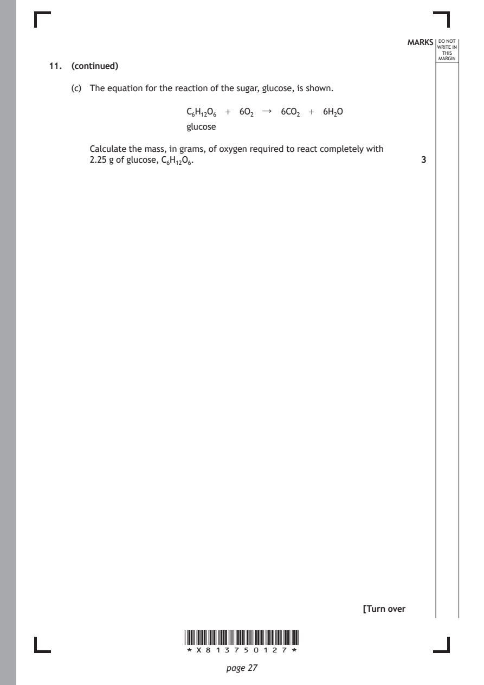
Selectable page text
MARKS _{W}^{D}_{R}^{O}_{I} _{T}^{N}OT
E IN
THIS
MARGIN
11. (continued)
(c) The equation for the reaction of the sugar, glucose, is shown.
C₆H₁₂O₆ + 6O₂ ↓ 6CO₂ + 6H₂O
glucose
Calculate the mass, in grams, of oxygen required to react completely with
2.25 g of glucose, C₆H₁₂O₆. 3
[Turn over
*X813750127*
page 27PDF page 28
Paper 2, Question 12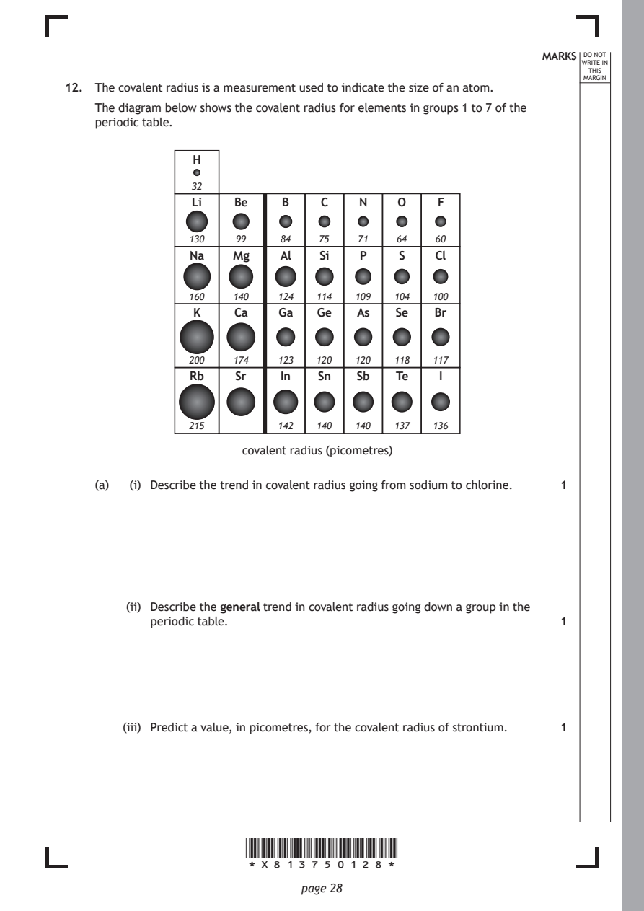
Selectable page text
MARKS _{W}^{D}_{R}^{O}_{I} _{T}^{N}OT
E IN
THIS
MARGIN
12. The covalent radius is a measurement used to indicate the size of an atom.
The diagram below shows the covalent radius for elements in groups 1 to 7 of the
periodic table.
H
32
Li Be B C N O F
130 99 84 75 71 64 60
Na Mg Al Si P S Cl
160 140 124 114 109 104 100
K Ca Ga Ge As Se Br
200 174 123 120 120 118 117
Rb Sr In Sn Sb Te I
215 142 140 140 137 136
covalent radius (picometres)
(a) (i) Describe the trend in covalent radius going from sodium to chlorine. 1
(ii) Describe the general trend in covalent radius going down a group in the
periodic table. 1
(iii) Predict a value, in picometres, for the covalent radius of strontium. 1
*X813750128*
page 28PDF page 29
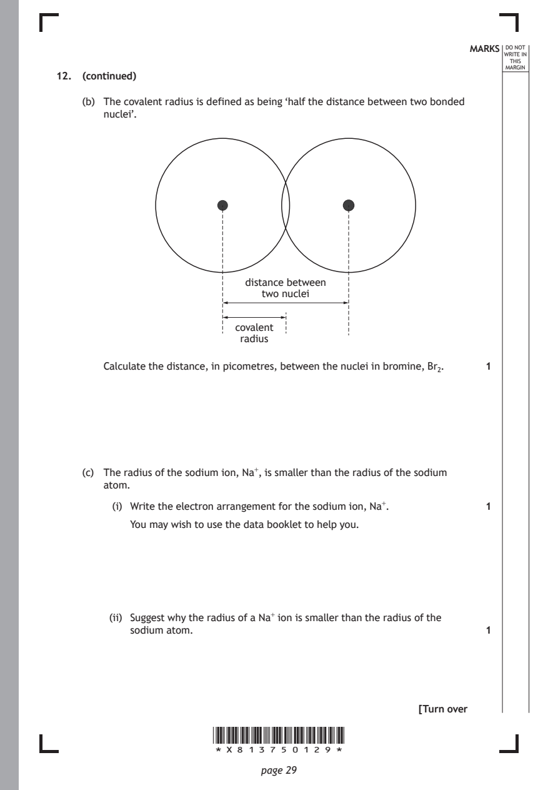
Selectable page text
MARKS _{W}^{D}_{R}^{O}_{I} _{T}^{N}OT
E IN
THIS
MARGIN
12. (continued)
(b) The covalent radius is defined as being ‘half the distance between two bonded
nuclei’.
distance between
two nuclei
covalent
radius
Calculate the distance, in picometres, between the nuclei in bromine, Br₂. 1
(c) The radius of the sodium ion, Na⁺, is smaller than the radius of the sodium
atom.
(i) Write the electron arrangement for the sodium ion, Na⁺. 1
You may wish to use the data booklet to help you.
(ii) Suggest why the radius of a Na⁺ ion is smaller than the radius of the
sodium atom. 1
[Turn over
*X813750129*
page 29PDF page 30
Paper 2, Question 13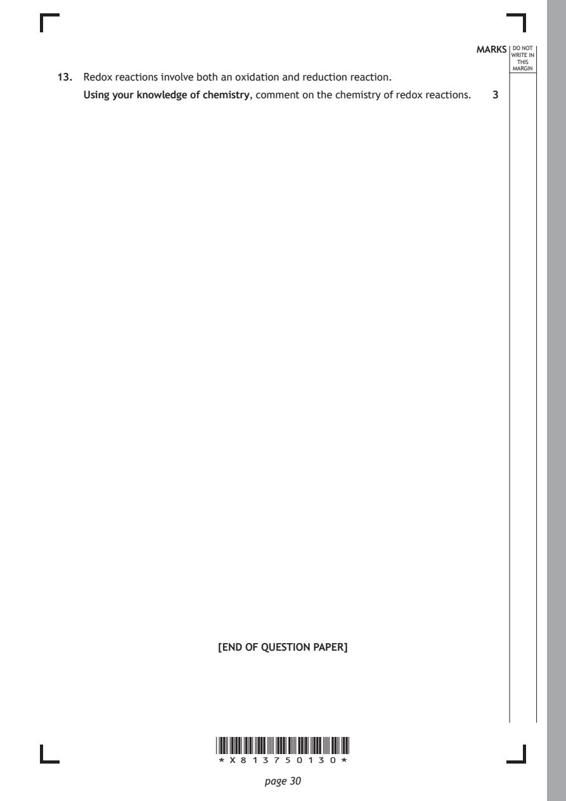
Selectable page text
MARKS _{W}^{D}_{R}^{O}_{I} _{T}^{N}OT
E IN
THIS
MARGIN
13. Redox reactions involve both an oxidation and reduction reaction.
Using your knowledge of chemistry, comment on the chemistry of redox reactions. 3
[END OF QUESTION PAPER]
*X813750130*
page 30PDF page 31
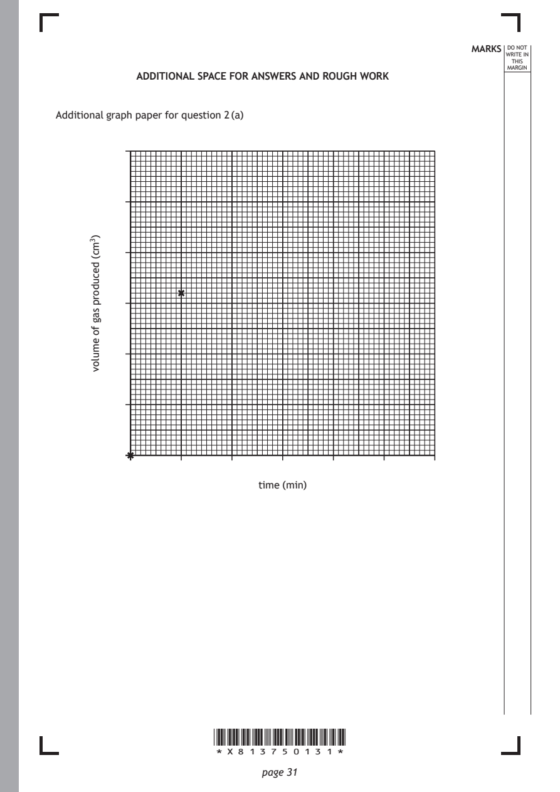
Selectable page text
MARKS _{W}^{D}_{R}^{O}_{I} _{T}^{N}OT
E IN
THIS
MARGIN
ADDITIONAL SPACE FOR ANSWERS AND ROUGH WORK
Additional graph paper for question 2 (a)
*X813750131*
page 31
)3mc(
decudorp
sag
fo
emulov
time (min)PDF page 32
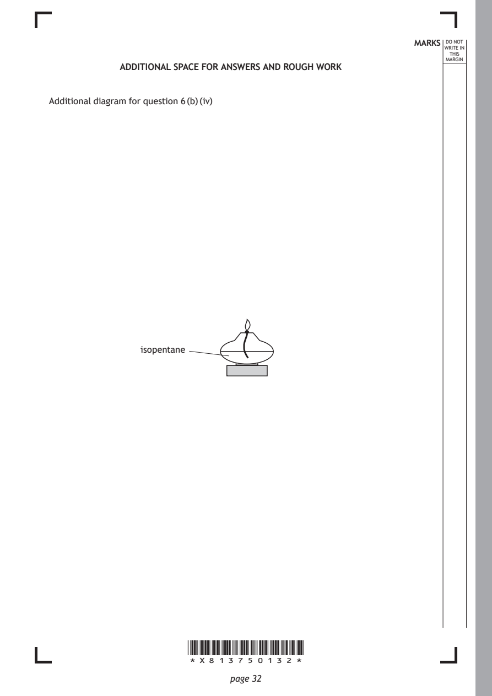
Selectable page text
MARKS _{W}^{D}_{R}^{O}_{I} _{T}^{N}OT
E IN
THIS
MARGIN
ADDITIONAL SPACE FOR ANSWERS AND ROUGH WORK
Additional diagram for question 6 (b) (iv)
isopentane
*X813750132*
page 32PDF page 33
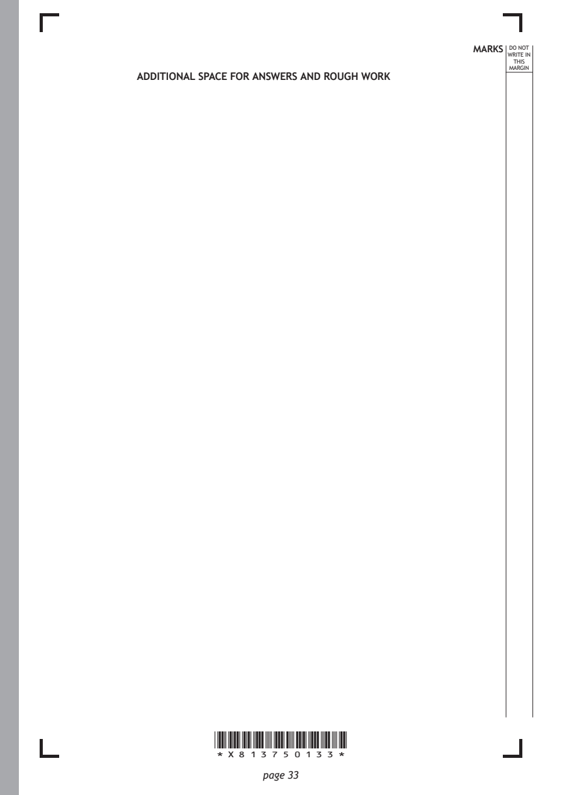
Selectable page text
MARKS _{W}^{D}_{R}^{O}_{I} _{T}^{N}OT
E IN
THIS
MARGIN
ADDITIONAL SPACE FOR ANSWERS AND ROUGH WORK
*X813750133*
page 33PDF page 34

Selectable page text
MARKS _{W}^{D}_{R}^{O}_{I} _{T}^{N}OT
E IN
THIS
MARGIN
ADDITIONAL SPACE FOR ANSWERS AND ROUGH WORK
*X813750134*
page 34PDF page 35
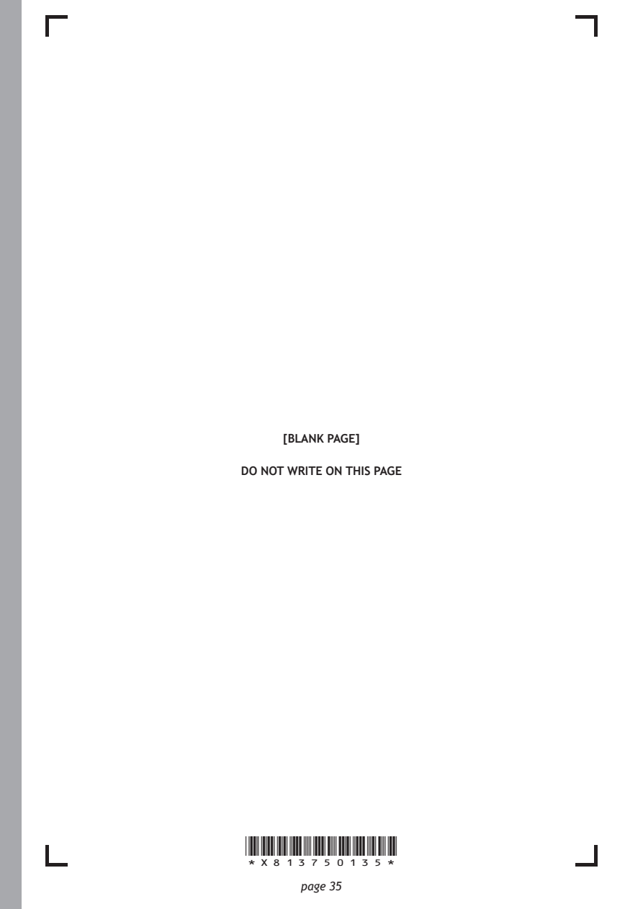
Selectable page text
[BLANK PAGE]
DO NOT WRITE ON THIS PAGE
*X813750135*
page 35PDF page 36
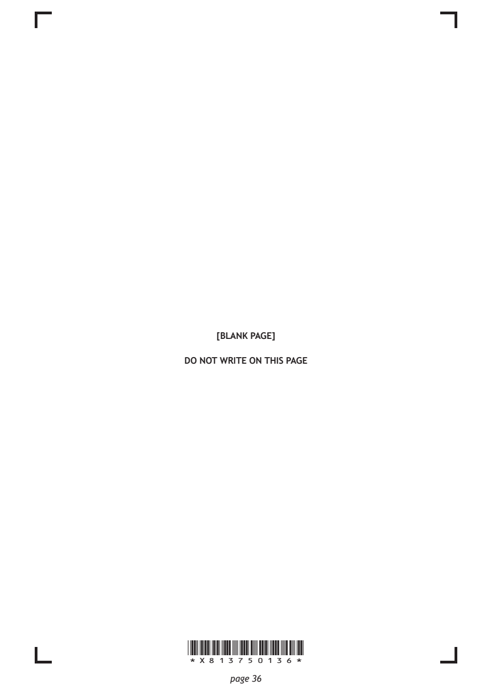
Selectable page text
[BLANK PAGE]
DO NOT WRITE ON THIS PAGE
*X813750136*
page 36